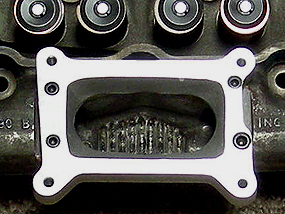

One of the most popular modifications to increase the performance of the small inline six, is to replace the stock one barrel carb with a two barrel. In this article we will briefly discuss the different ways to install a 2V carb, as well as carb selection, however our main goal is to discuss the results of our dyno test so you know what to expect after a 2V carb swap.
Installation Methods
2V Adaptor:
The easiest and cheapest way to install a two barrel carb is by using a 2V carb adaptor, which can be purchased from numerous suppliers, including Classic Inlines. The 2V adaptor is a bolt on modification, which works by funneling both barrels of the carb into the one barrel hole in the manifold (as shown in the picture below). One company claims gains of 20HP are possible, others says you can expect small improvements in gas mileage and throttle response, and a slight gain in performance. However another company states the 2V swap is a waste of money, offering little or no benefit for the money spent. In their opinion the swap will, in most cases, result in hesitation and flat spots during acceleration, with little or no gains in performance.
Classic Inlines has yet another opinion, however our thoughts are on a slightly different path. We question the value of the modification, rather than the validity. In other words, we believe additional power gains may be possible using a 2V adaptor, but question the amount of power gained verse the amount of money spent? Simply put, we believe the money would be better spent elsewhere, as in high ratio rocker arms or a distributor upgrade. If you want to install a 2V carb, use the conversion method.
2V Conversion:
The other way to install a two barrel carb, is what we call a "2V Conversion". This method requires removing the cylinder head, milling the intake manifold, opening up and widening the carb bore, installing a 2V conversion adaptor (as shown in the picture below). While this method offers huge benefits over the 2V adaptor, it also has big drawbacks, as in removing and re-installing the cylinder head. Of course, if your rebuilding the cylinder head or the motor, then it's no longer a drawback. The only problem you might have, is finding a machine shop that's willing to do the modification. Most shops charge anywhere from $100 to $200 to do the conversion (labor only). Some shops might offer to make an adaptor, but you can probably purchase one cheaper online. For comparison you'll need to figure in the expense of the parts, as well as the labor, to R&R the cylinder head. However I think you'll understand why we recommend this method over a 2-1 adaptor, even though it cost more and requires considerably more labor.
NOTE: For more information, please see our tech articles on Selecting the Right Carb, Calculating CFM, and 2V Carb Swaps and Modifying the Log Manifold.
|
 |
2V Adaptor (Weber carb) |
2V Conversion (Holley or Autolite) |
Carb Choice
The next item to consider is carb choice. Not only do you need to decided the size, or CFM rating, you also need to determine which manufacturer makes a carb best suited to your needs. The three most popular 2V carbs are Autolite, Holley, and Weber (also called 32/36 Weber, Holley-Weber and Carter-Weber). Each carb has advantages and disadvantages over the other carbs, so it's very important to know the differences between them, and the applications they are best suited for. For more information, please see our tech articles on Selecting the Right Carb, Calculating CFM, and Modifying the Log Manifold.
Value
Which method gives you the best bang for your buck? If your just comparing HP gains to cost, this is a no brainier. But what if you want to take mileage or driveability into account? I like to make a list, with the most important item at the top and the least important on the bottom, then compare the results to figure out which modification best suits my needs. Below are a few points you might use to make a comparison.
Horsepower Ratio: This is an easy one, add up your total cost and compare it to the HP gained. For example: If a modification results in 5 HP, at a total cost of $500 dollars, the ratio would be 1HP per $100 dollars.
Total HP Gains: This is also easy, in a manor of speaking, as long as you have a chassis dyno available. Basically the only way you'll know what your true HP gains are, is to put your car on a chassis dyno. Most shops charge around $75-125 for two pulls, and while this might seem expensive and prohibitive, it's really not. Most shops do a baseline pull first, re-jet and adjust the carb, then confirm the changes with a second pull. This is done to assure that the carb is tuned properly and timing is set correctly, which results in lower emissions, an increase in performance (HP), and an increase in mileage. The increase in mileage not only saves money every time you fill up, the money saved eventually pays for the dyno session. Therefore we consider dyno testing more of a necessity, rather than a luxury. Plus it's nice to know the actual HP gains, and that your part to keep our air clean.
Mileage: This ones a little tougher, as you won't know the increase in mileage until the modification is done. However you can use estimations or ask other guys what their results were. You can also calculate the payback period, or the money saved over a years time, for a comparison.
Driveability: This one is a given for the most part. Either it's important, or its not. Someone looking for maximum horsepower, as in a race car application, has no problems with a motor that has a rough idle, poor throttle response, or one that stumbles under quick acceleration. All they are concerned with, is how it responds at full throttle. One the other hand if it's a daily driver, this may well be at the top of your list, or second only to mileage.
|
Dyno Results
To our knowledge no one has ever dyno tested the different methods of installing a 2V carb, or if they have, the results haven't been published.
Therefore Classic Inlines decided to put them to the test. The results of our dyno sessions are shown in the charts below. We also included a brief summary of the results, based on our experience.
Note: While we were waiting to set up a dyno session (after the head swap), the Maverick was taken out to the track to see how it would do. With the stock log intake and 1V carb, the best ET was a 17.35 @ 75 mph, with an average ET of 17.50 @ 74 mph. With the modified cylinder head (2V conversion) the best ET was 16.35 @ 82 mph, with an average of 16.47 @ 81 mph, over six runs. That's a full second faster with the 2V Conversion head. The ET translates to approximately 102 RWHP, which would be a gain of 25 HP over the YF-1V carb, and 20 HP over the Holley 350 mounted with a 2V adaptor. If our upcoming dyno sessions verify the numbers, I'd say the 2V Conversion is definitely the way to go, and worth the extra effort and expense of pulling the cylinder head.
|
Engine: 200ci - 264-110 Cam - Headers - Log Head
Upgrades: DUI dizzy - 2V Adaptor & Carb (various carbs) |
Carb |
CFM |
Dizzy |
Max HP |
|
Max TQ |
|
Total Gains |
Carter 1V |
180 |
LOM |
62 @ 3900 |
0/49 |
93 @ 2900 |
0/81 |
HP |
TQ |
Weber 2V |
300 |
LOM |
70 @ 4300 |
8/51 |
94 @ 3350 |
1/83 |
11 % |
1 % |
Weber 2V |
300 |
DUI |
85 @ 4900 |
23/66 |
105 @ 3300 |
12/97 |
27 % |
11 % |
Autolite 2V |
240 |
DUI |
83 @ 4950 |
21/67 |
105 @ 3400 |
13/98 |
25 % |
11 % |
Autolite 2V |
245 |
DUI |
84 @ 4900 |
22/68 |
105 @ 3300 |
14/99 |
26 % |
11 % |
Holley 2V |
350 |
DUI |
87 @ 4800 |
25/69 |
106 @ 3200 |
15/100 |
29 % |
12 % |
|
|
Engine: 250ci - Bone Stock - Headers - DUI ignition.
Upgrades: 2V Adaptor - 2V carb (various) |
Carb |
CFM |
Dizzy |
Max HP |
Gain/Avg |
Max TQ |
Gain/Avg |
Total Gains |
Carter 1V |
193 |
DUI |
75 @ 3950 |
0/62 |
110 @ 2500 |
0/100 |
HP |
TQ |
Weber 2V |
300 |
DUI |
79 @ 3750 |
4/67 |
118 @ 2550 |
8/107 |
5 % |
7 % |
Autolite 2V |
240 |
DUI |
80 @ 4100 |
5/65 |
116 @ 2650 |
6/105 |
6 % |
5 % |
Holley 2V |
350 |
DUI |
80 @ 3950 |
5/68 |
120 @ 2600 |
10/109 |
6 % |
8 % |
|
|
Engine: 250ci - Bone Stock - Headers - DUI ignition.
Upgrades: 2V Conversion - Larger Exh Valves - 2V carb (various) |
Carb |
CFM |
Dizzy |
Max HP |
|
Max TQ |
|
Total Gains |
Carter 1V |
193 |
DUI |
75 @ 3950 |
0/62 |
110 @ 2500 |
0/100 |
HP |
TQ |
Autolite 2V |
240 |
DUI |
93 @ 3850 |
18/78 |
143 @ 2550 |
33/125 |
19 % |
23 % |
Autolite 2V |
287 |
DUI |
97 @ 3800 |
22/80 |
144 @ 2500 |
34/128 |
23 % |
24 % |
Autolite 2V |
356 |
DUI |
99 @ 3750 |
24/80 |
145 @ 2500 |
35/129 |
24 % |
24 % |
Holley 2V |
350 |
DUI |
98 @ 3850 |
23/70 |
140 @ 2500 |
30/112 |
23 % |
21 % |
|
Brief Summary
When we compare the numbers from dyno #3A, verse dyno #3B, we see some very interesting results. First and foremost the advantages of mounting the 2V carb directly to the intake, verses using a 2 to 1 adaptor, are quite evident. We gained a maximum of 5RWHP when we used an adaptor, and 24RWHP when the carb was mounted directly to the log intake, or a gain of 6% verses 24% respectively. That's a huge difference considering we used exactly the same carb.
All three carbs produced nearly the same maximum HP when using the 2V adaptor, with the Holley producing the highest average HP, besting the Autolite by 4HP and the Weber by 2HP. Both the Weber and Autolite carbs accelerated smoothly, while the Holley had a definite stumble around 2100 rpm. The Holley 350cfm may be just a tad bit to big for a stock 250ci, while the Autolite 240cfm was probably a little small, which would explain the lower HP gains. The Autolite also peaked sooner than the other two, which are also signs that it was a bit to small.
Prices on the Weber carbs can vary greatly from one supplier to another, so check around. We have found that Langdon's Stovebolt offers the best price on the Weber Carbs, and the adaptor needed for this swap. Holley and Autolite carbs can be purchased from several online suppliers, including Classic Inlines, or you can buy a used carb at just about any swap meet for $50-$100 bucks.
All things considered, we feel the Autolite carbs are the best solution for those using an adaptor, or directly mounted, providing they are sized properly. Not too small, but not to big either. The Autolite's, unlike Weber and Holley carbs, come in seven different CFM ratings, so it should be pretty easy to match the proper sized carb to your specific engine build. Plus they are the only carbs that were designed with Annular Discharge, which we feel is far superior to other designs. However, that's just our opinion. They also have a one piece float bowl and main body casting, which eliminates leaks and maintenance.
Annular fuel discharge, by definition, is where the fuel is discharged into the bore of the carburetor from a series of small holes around the perimeter of the booster venturi, rather than a single hole. This method of discharging the fuel breaks up and partially atomizes the fuel for better throttle response, improved fuel economy, and more power. It's also as close as you can get to fuel injection, using a carb.
Click here to purchase Carburetors, Adaptors, and Related Products
|
Related Tech Articles - Induction
|
|
|
|
|
|
|
|
|
|
Future Article |
|
|
Related Tech Articles - Cylinder Heads
|
|
|
|
|
|
|
  

|